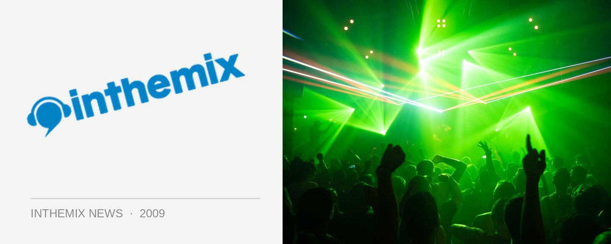

We Love Sounds lineup gets bigger
This year’s We Love Sounds lineup has lived up to its reputation as Australia’s most cutting-edge festival, and with the inclusion of world #1 DJ Armin van Buuren, it’s also been the most controversial we’ve seen in its five year history. That hasn’t stopped tickets from flying out the door like hotcakes though, and the organisers have announced a new range of additions to the lineup.
First up we’ve got Dave Nada, a big supporter of the Baltimore Club sound and a firm favourite of the likes of heavyweights like Crookers, MSTRKRFT, DJ Craze and Switch. And for techno lovers we’ve got Chilean queen Dinky. She’s been a regular on labels like Cocoon and Crosstown Rebels for the past few years, as well as her own Horizontal imprint, and she’ll be picking up the slack for Sascha Funke who has unfortunately had to postpone his tour until later in the year.
On the local side of things, we’ll be listing to sets form Perth’s Shazam who’s signed to the Bang Gang 12 Inches label and playing in that posse’s respective arena, as well as Sydney DJ/producer Redial who’ll be playing for the Trashbags crew.
Add this to the original lineup of international talent, and it’ll make for the biggest We Love Sounds yet. So big in fact that they’ve had to extend the party across the road to the Centennial Parklands. Bring on June!
We Love Sounds festival takes place on Saturday 6th June, Queen’s Birthday Weekend from 12pm-10pm. Stay tuned for loads of coverage as June approaches and check out our Festival Page for more info.
Armin Van Buuren (5 hr set)
Armand Van Helden
James Zabiela
Laidback Luke
Chris Lake
Kissy Sell Out (live)
Dirty South
Guy Gerber (live)
16 Bit Lolitas
Grafton Primary (live)
Bobmo
Mathew Dekay
Headman
Pivot (live)
Anja Schneider
Popof (live)
Justin Martin
Dinky
In Flagranti (live),
Guns N Bombs, Danger (live)
Passions
Hijack
Dave Nada
Bang Gang
Ajax
Aston Shuffle
Sampology
Bag Raiders
Trashbags Posse DJs
Canyon
Emerson Todd
Robbie Lowe
Shazam
Redial
Act Yo Age
+More TBA